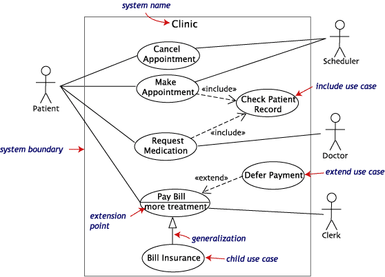

Use case diagrams give an outsider's view of a system. Every use case diagram has actors, use cases, and communications. A simple use case diagram can be expanded with additional features to display more information.
This page covers the following UML use case features.
Medical clinic diagram, expanded
The following use case diagram expands the original medical clinic diagram with additional features.

A system boundary rectangle separates the clinic system from the external actors.
A use case generalization shows that one use case is simply a special kind of another. Pay Bill is a parent use case and Bill Insurance is the child. A child can be substituted for its parent whenever necessary. Generalization appears as a line with a triangular arrow head toward the parent use case.
Include relationships factor use cases into additional ones. Includes are especially helpful when the same use case can be factored out of two different use cases. Both Make Appointment and Request Medication include Check Patient Record as a subtask. In the diagram, include notation is a dotted line beginning at base use case ending with an arrows pointing to the include use case. The dotted line is labeled <<include>>.
An extend relationship indicates that one use case is a variation of another. Extend notation is a dotted line, labeled <<extend>>, and with an arrow toward the base case. The extension point, which determines when the extended case is appropriate, is written inside the base case.